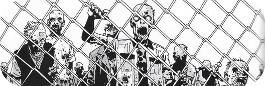

ORIGEM

O criador de The Walking Dead é Robert Kirkman, nascido em 30 de Novembro de 1978. Robert é um escritor e roteirista Norte-Americano, que começou sua carreira desde jovem. Robert é conhecido principalmente por escrever e criar a história em quadrinhos The Walking Dead. Lançada oficialmente em 2003, a obra conta a história de diferentes sobreviventes reagindo de diversas formas ao apocalipse zumbi.


Transformação em série

A transformação de The Walking Dead em uma série de televisão começou após o sucesso das histórias em quadrinhos. Em 2010, o diretor Frank Darabont apresentou o projeto à emissora AMC, que aprovou a produção. A série estreou em 31 de outubro de 2010, com Andrew Lincoln interpretando o protagonista Rick Grimes. O sucesso foi tão grande que The Walking Dead se tornou uma das séries de zumbis mais populares do mundo.